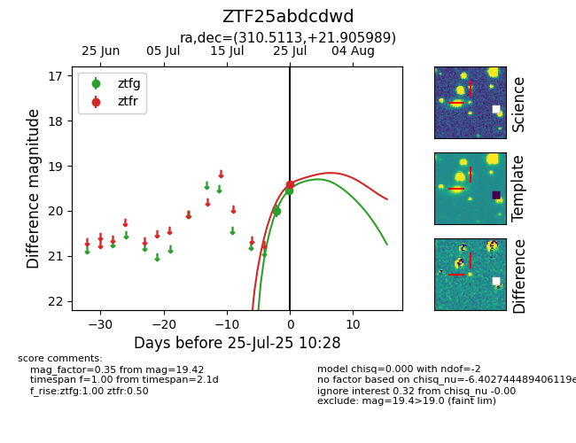

Target ZTF25abdcdwd at 2025-07-25 10:28, see:
FINK: fink-portal.org/ZTF25abdcdwd
Lasair: lasair-ztf.lsst.ac.uk/objects/ZTF25abdcdwd
ALeRCE: alerce.online/object/ZTF25abdcdwd
alt names
ZTF25abdcdwd (ztf,fink)
coordinates:
equatorial (ra, dec) = (310.5113,+21.90599)
galactic (l, b) = (65.6703,-12.30392)
photometry
last ztfg=19.54, ztfr=19.42
2 ztfg, 1 ztfr detections
